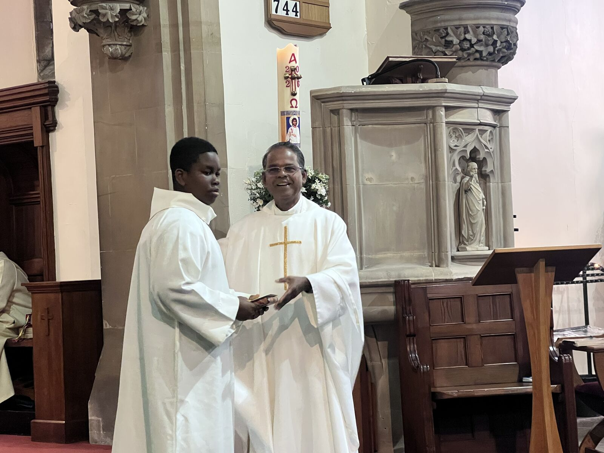
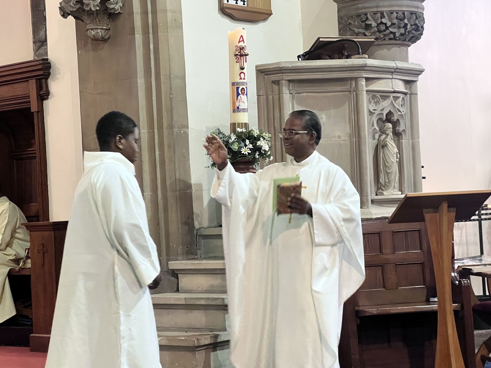
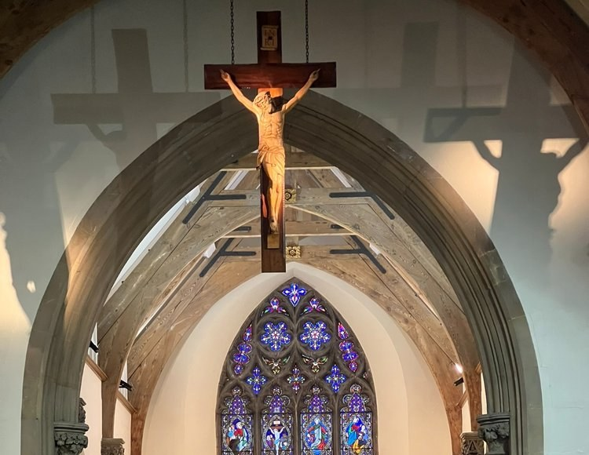
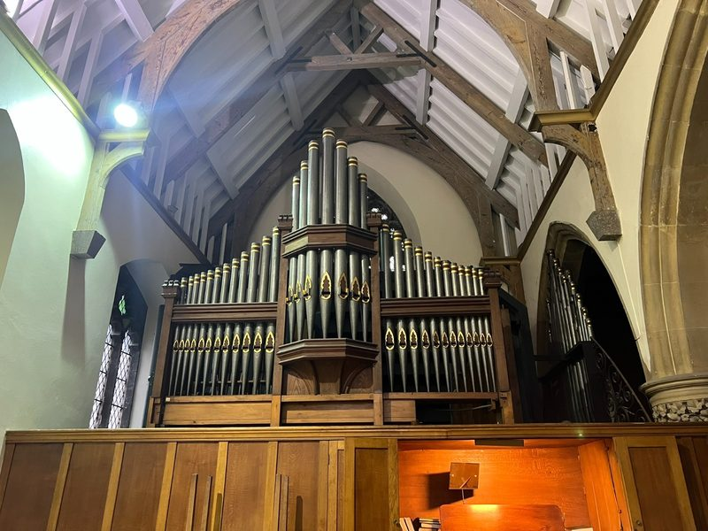
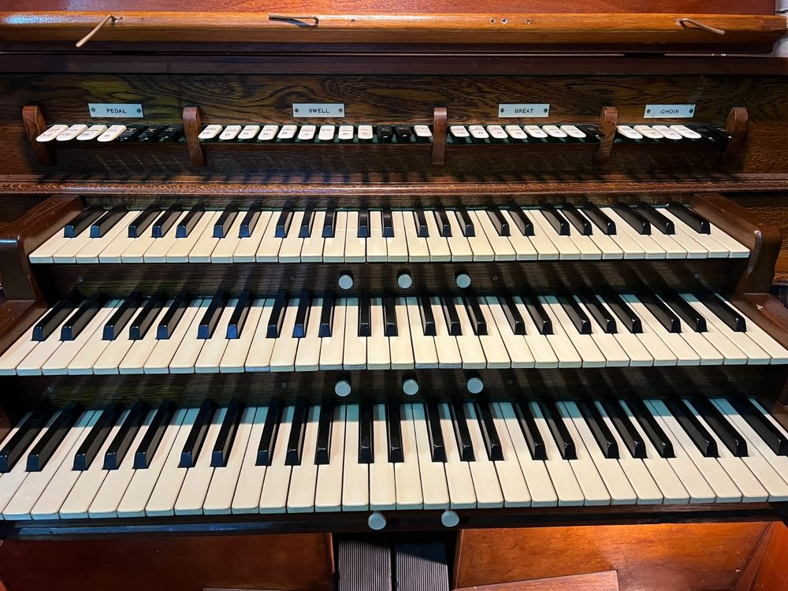

Our Church
Views from Our Lady & St. James, Bangor





Views from Our Lady & St. James, Bangor


November 2026 schedule — see the calendar below for date-by-date details
Times may vary on feast days — please check the bulletin below.
The Caernarfon Vigil Mass is at 17:00 during wintertime because of darker evenings.
November updates: there will be no Holy Mass in Bangor on Tuesday 24 November because of the priests’ retreat (volunteer-led Rosary at 9:45 instead). Weekend of 14–15 November: Vigil Mass in Bangor on Saturday at 17:00 (no Vigil Mass in Caernarfon); on Sunday, Mass in Bangor at 10:00 only (no 17:00 Mass) and First Holy Communion Mass in Caernarfon at 12:30.
Ordinary Time and the start of Advent — November 2026
| Date | Observance | Details |
|---|---|---|
| Sunday 1 Nov | Solemnity of All Saints 31st Sunday in Ordinary Time | Bangor: 10:00 & 17:00 Holy Mass |
| Monday 2 Nov | All Souls’ Day | Bangor: 19:00 Holy Mass |
| Tuesday 3 Nov | Morning Prayer & Mass | Bangor: 09:45 Morning Prayer & 10:00 Holy Mass |
| Thursday 5 Nov | Weekday Mass | Bangor: 12:15 Holy Mass |
| Saturday 7 Nov | Vigil Mass | Caernarfon: 17:00 Vigil Mass |
| Sunday 8 Nov | 32nd Sunday in Ordinary Time | Bangor: 10:00 & 17:00 Holy Mass |
| Monday 9 Nov | Weekday Mass | Bangor: 19:00 Holy Mass |
| Tuesday 10 Nov | Morning Prayer & Mass | Bangor: 09:45 Morning Prayer & 10:00 Holy Mass |
| Thursday 12 Nov | Weekday Mass | Bangor: 12:15 Holy Mass |
| Saturday 14 Nov | Mass time change Vigil Mass | Bangor: 17:00 Vigil Mass — no Vigil Mass in Caernarfon this week |
| Sunday 15 Nov | First Holy Communion 33rd Sunday in Ordinary Time | Bangor: 10:00 Holy Mass only (no 17:00 Mass) — Caernarfon: 12:30 First Holy Communion Mass |
| Monday 16 Nov | Weekday Mass | Bangor: 19:00 Holy Mass |
| Tuesday 17 Nov | Morning Prayer & Mass | Bangor: 09:45 Morning Prayer & 10:00 Holy Mass |
| Thursday 19 Nov | Weekday Mass | Bangor: 12:15 Holy Mass |
| Saturday 21 Nov | Vigil Mass | Caernarfon: 17:00 Vigil Mass |
| Sunday 22 Nov | Christ the King 34th Sunday in Ordinary Time | Bangor: 10:00 & 17:00 Holy Mass — Thanksgiving Mass for Married Couples at 10:00 |
| Monday 23 Nov | Weekday Mass | Bangor: 19:00 Holy Mass |
| Tuesday 24 Nov | No Holy Mass | Bangor: 09:45 volunteer-led Rosary — no Holy Mass because of the priests’ retreat |
| Thursday 26 Nov | Weekday Mass | Bangor: 12:15 Holy Mass |
| Saturday 28 Nov | Vigil Mass | Caernarfon: 17:00 Vigil Mass |
| Sunday 29 Nov | First Sunday of Advent | Bangor: 10:00 & 17:00 Holy Mass — Family Eucharist at 10:00 with a blessing for birthdays |
| Monday 30 Nov | St. Andrew, Apostle | Bangor: 19:00 Holy Mass |
Parish life — November 2026
November begins with the Solemnity of All Saints on 1 November and All Souls’ Day on 2 November. We rejoice in the saints and lovingly remember our departed family members, friends and parishioners. Offering Holy Mass for the faithful departed is one of the greatest expressions of that love. During this month of remembrance, Fr. Savi warmly encourages you to request a Mass for someone you love, whether for the departed, the sick, families or special intentions. Envelopes are available in the church and may be placed in the box provided.
Let us pray for the proper use of wealth, that, not succumbing to the temptation of selfishness, it may always be put at the service of the common good and solidarity of those who have less.
First Holy Communion will be celebrated in Caernarfon on Sunday 15 November at 12:30. Please keep our First Communicants and their families in your prayers. Weekend Masses: Saturday 14 November, 17:00 Vigil Mass in Bangor (no Vigil Mass in Caernarfon); Sunday 15 November, 12:30 First Holy Communion Mass in Caernarfon; no Mass in Bangor at 17:00. Please share this with anyone who may be affected.
There will be no 10:00 Holy Mass in Bangor on Tuesday 24 November, as the priests of the Vicariate will be on retreat at the Loreto Spirituality Centre in Llandudno. Everyone is welcome to join the volunteer-led Rosary at 9:45. Please keep our priests in your prayers.
On Sunday 22 November at 10:00 we will celebrate a Thanksgiving Mass for couples marking a special anniversary in 2026. Couples celebrating a five-year milestone, from 5 to 60 years and beyond, are warmly invited. Please place your name and details in the box in the church so that we can remember you in our prayers. Family and friends are welcome.
Our Family Eucharist will be celebrated on Sunday 29 November at 10:00, the First Sunday of Advent. A special blessing will be given to all those celebrating birthdays. Please complete a slip, available at the back of the church, and place it in the letterbox.
As Advent and Christmas approach, our church needs decorating for the season. If you would like to sponsor a Christmas tree, or share part of its cost, we would be most grateful. A tree can also be given in memory of a loved one or in thanksgiving for a special intention. Please speak to Fr. Savi or the parish office.
Advent begins on Sunday 29 November. As last year, we invite volunteers to help plan and decorate the church for Advent and Christmas. If you would like to help, please get in touch with Chelsey David or Vanitha.
On Friday 11 December, confessions will be available at the Church of the Most Holy Redeemer (Borth Road, Porthmadog, LL49 9BB) with several priests present from 11:00, followed by Holy Mass at 12 noon. All are encouraged to make use of this opportunity during Advent.
All youth are welcome at St Joseph’s Church, Colwyn Bay, on Saturday 21 November from 10:30, with Mass celebrated by Bishop Peter at 13:30. Under-18s require a parental consent form.
The Bangor Catholic Chaplaincy offers students and staff a welcoming community of friendship, support and hospitality. Weekly activities run on Mondays, Tuesdays and Wednesdays, with Sunday Movie Nights. Special events include guest speakers, a Vocations Evening, a church bake sale, a sponsored walk for Red Wednesday and local pilgrimages. New students are welcome to meet the team after Sunday Mass or to contact Ray, the University Chaplain.
Bringing Holy Communion to those unable to attend Mass remains a parish priority. Please pass details to Fr. Savi or a parish team member if you or someone you know would value a visit.
Confirmation preparation, First Holy Communion classes, and RCIA registration are all open. Forms are available at the back of church and on the parish website.
The project to upgrade the parish sound system was sponsored in April by a generous donation of £5,000, and a further £2,000 was raised by the parish for additional equipment. We are now working with a new supplier. Thank you for your continued support and patience.
By card or phone: use the card reader at the entrance of the church, or scan the QR code with your phone. UK taxpayers can complete Gift Aid once by email after paying by card, and it will apply to future donations on that card. By cheque: payable to Bangor and Caernarfon Catholic Church.
Four generous families sponsored new chasubles, which have now arrived, been blessed and are in active use. A new cross for Good Friday veneration, imported from Italy and sponsored by a generous family, was blessed on 4 October and now stands at the front in the aisle. Thank you to everyone who contributed; you are remembered in our prayers.
Please send news items for the December edition of The Flame to bangorparishflame@outlook.com by the first week of November.
Download, print, and return to the parish office or the box at the back of the church
If you are a UK tax payer, please use this charity gift aid declaration – single donation form to make your donation to upgrade the church’s sound system go further.
Download ↓Application form for the Baptism of a child. Kindly attach the required documents: details for parents, godparents, residency, marital status (if married), and the child’s birth certificate. Please contact Fr. Savi to arrange a preparation meeting at least three months before the proposed date of Baptism.
Download ↓Registration form for children preparing to receive their First Holy Communion. Includes faith formation questions and a parental commitment to attend preparation sessions.
Download ↓Registration form for the rite of Confirmation. Includes faith formation questions, documentation requirements and commitment to attend preparation sessions.
Download ↓For children wishing to serve at the altar, or already serving. Provides contact details for scheduling, training, and parish events. Parental consent required.
Download ↓Registration form for the Rite of Christian Initiation for Adults. For anyone exploring the Catholic faith or wishing to be received into the Church. Sessions are held on Thursday evenings.
Download ↓A step-by-step guide to arranging a Catholic marriage at the parish, covering documentation, marriage preparation, mixed-marriage permissions, and civil requirements. Please contact Fr. Savi at least 6–12 months in advance.
Download ↓When a loved one passes away, the parish is here to support you with care and dignity as you prepare the funeral liturgy. The guide aids in making proper arrangements that reflect your wishes.
Download ↓Please return this form to the parish office before the Youth Day at St. Joseph's in Colwyn Bay on 21 November, to enable youth to take part.
Download ↓All forms should be returned to the parish office or placed in the box at the back of the church. For queries, contact the Parish Office: 01248 370421 or speak with Fr. Savi after Mass.
A living tradition of sacred music

The church is fortunate to possess an 1895 three-manual organ by Bishop & Son, used to accompany the choir at Sunday morning services and played at concerts and events throughout the year.
To learn more, visit the National Pipe Organ Register. To arrange a visit, contact our organist Abhay at atporganist@icloud.com.
| Division | Stop |
|---|---|
| Pedal | 32′ Contra Bass |
| 16′ Violone | |
| 16′ Bourdon | |
| 8′ Bass Flute | |
| Choir to Pedal | |
| Great to Pedal | |
| Swell to Pedal | |
| Choir | 8′ Rohr Flute |
| 8′ Dulciana | |
| 8′ Clarinet | |
| 4′ Lieblich Flute | |
| Choir Octave | |
| Swell to Choir | |
| Great | 16′ Contra Gamba |
| 8′ Open Diapason I (display) | |
| 8′ Open Diapason II | |
| 8′ Clarabella | |
| 4′ Principal | |
| 4′ Flauto Traverso | |
| 2′ Flautina | |
| Swell to Great | |
| Swell | 16′ Double Diapason |
| 8′ Violin Diapason | |
| 8′ Lieblich Gedact | |
| 8′ Vox Angelica | |
| 8′ Voix Celeste | |
| 8′ Cornopean | |
| 8′ Oboe | |
| 4′ Geigen Principal | |
| III Mixture | |
| Tremulant | |
| Swell Octave · Swell Suboctave |

The church has a voluntary choir which sings at the 10:00 Sunday Mass each week, as well as enriching the liturgy on days of obligation and major celebrations throughout the liturgical year.
The choir sings hymns, congregational mass settings, and occasional anthems. All are welcome to join.
To find out more, please speak with one of our choir members after the Sunday morning Mass, or contact our organist:
Abhay
atporganist@icloud.com
We are here to serve
Fr. Savi Menachery CMI
Parochial Administrator
“Eternal rest grant unto them, O Lord,
and let perpetual light shine upon them.”